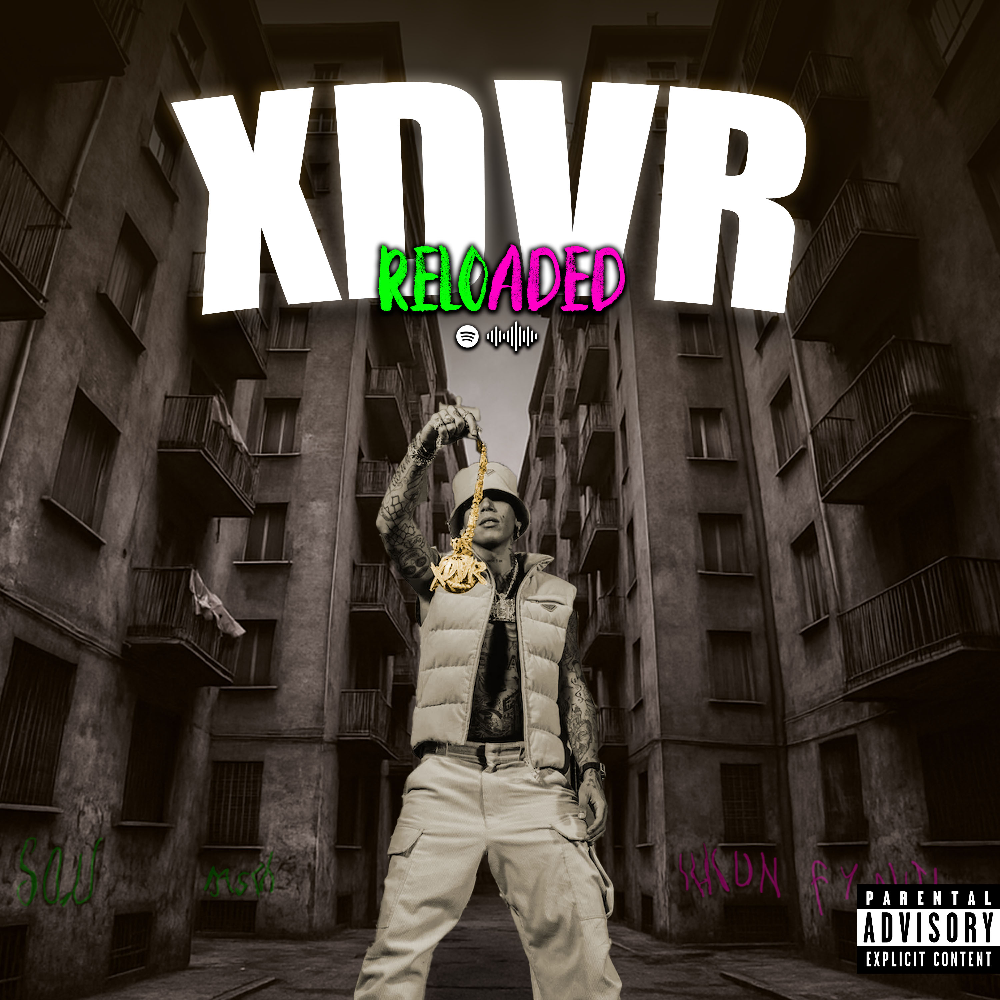
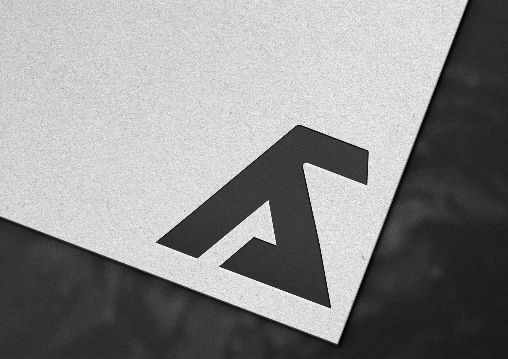

I miei lavori

Vinile rivisitato "XDVR"
Un progetto che fonde astrazione e nostalgia per rappresentare l'identità sonora dell'artista. Texture retrò e colori tenui si uniscono per evocare un viaggio musicale intimo.

Mockup vinile XDVR
Design tipografico essenziale e moderno, pensato per adattarsi a diversi supporti: da vinili a contenuti digitali.

Copertina EP "Synth Waves"
Immagine evocativa in stile vaporwave con accenti blu e viola per trasmettere l'essenza elettronica del progetto musicale.